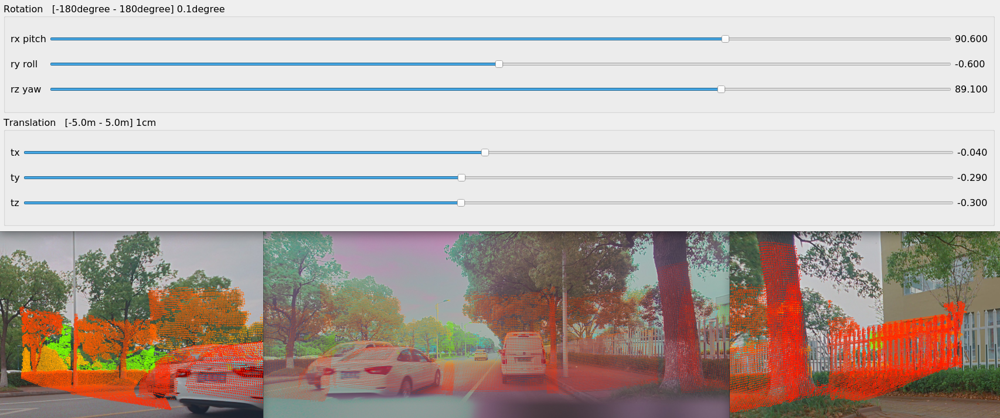

Pin Tools V2.0 outside the sensor v2.0
Run instruction ./calib_lidar2camera -f root_path -lidar lidar_index -pos evaluation_data_pos
-f : Input the folder of the calibration data, Directory level to the date of date
-pos : POS number selected to verify data is used to generate point cloud projection images
-lidar : The serial number of the lidar that needs to be adjusted
main: 0 m1_front: 1 m1_left: 2 m1_right: 3
If E.G. If you want to adjust the external parameters of M1 Right Lidar at 11238C 20230426, the projection selects POS1 data and enter the following instructions in the terminal:
/calib_lidar2camera -f ../test_data/11238C/20230426/ -lidar 2 -pos 1

Drag the slider adjust the parameters, the projection map of the three windows will be updated with it
After the adjustment is completed, close the slider window. At this time, the two external files lidar_extrinsic.yaml lidar_Extrinsic_to_vehicle.yaml under the XXTrinsic folder folder folder folder folder folder
Before replacing the external parameter file, a backup process will be made to the file to be modified, and lidar_extrinsic_backup.yaml lidar_Extrinsic_thicle_backup.yaml is generated in the corresponding directory.